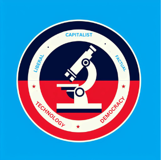

Tourism
Visa informationHistory:
| Novaria is a nation focused mainly on IT, Scientific Advancement, Public Education, Intelligence, Defense and Healthcare. But what is its history? Well, if you're interested to know, you have come to the right place. This country did not exist before. We were a part of a nation named Heronia. But there was a disaster. There was a major enemy attack from the nation of Prodania. But after those disasters, some people survived. Those were the people that started this country, Novaria. They are now called "Civil Bloodbath Survivors". They are the original people of this nation. Due to the fear of another disaster like that, we focus on Defense and Healthcare. IT, Scientific Advancement, Public Education and Intelligence is also focused on as Heronia was a country that believed a lot in spiritual beings. But some people did not like it. The people who survived "the disaster", were some of those people. Novarian people always look towards the future, and they want peace and improvement. But if someone does something wrong, the law will not hesitate to give them Capital Punishment and Corporal Punishment. If we are attacked, we WILL defend our country. |
.png) Last Heronian flag |
|---|
Trivia:
Meaning of the flag
|
 Current political party logo- Future Political party |
|---|
Views:
9axes InfValues